Lecture 02 · AI Fundamentals
AI는 어떻게 데이터에서 규칙을 배울까?
AI는 Data와 Label에서 패턴을 학습하고, Prediction Error가 줄어들도록 Weight를 조정합니다.
Data → Model → Prediction → Loss → Learning → Generalization
1
AI, Machine Learning, Deep Learning은 어떻게 다를까?
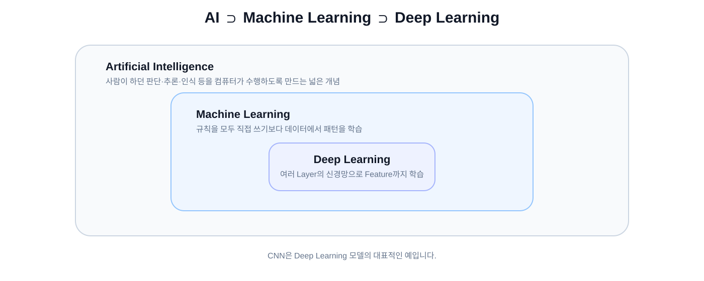
CNN은 Deep Learning 모델이고, Deep Learning은 Machine Learning의 한 갈래입니다.
2
규칙을 사람이 직접 쓰는 것 vs 데이터에서 배우는 것
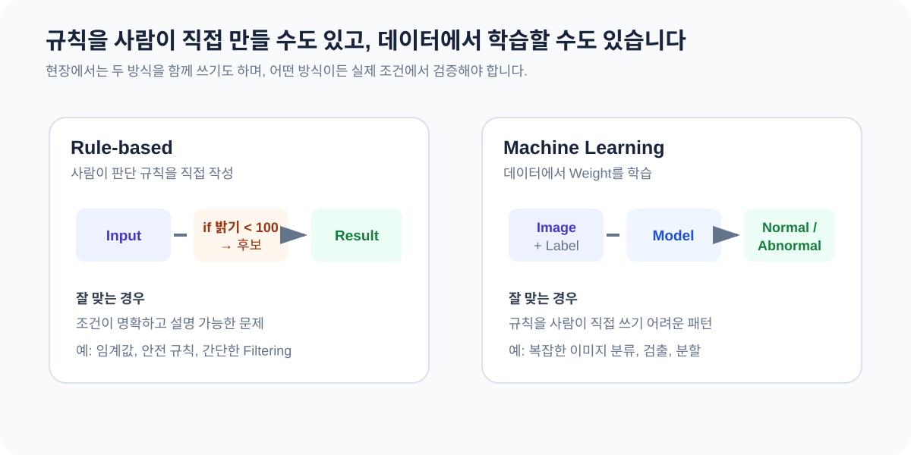
3
지도학습과 비지도학습
지도학습은 정답을 이용하고, 비지도학습은 정답 없이 데이터 자체의 구조를 찾습니다.
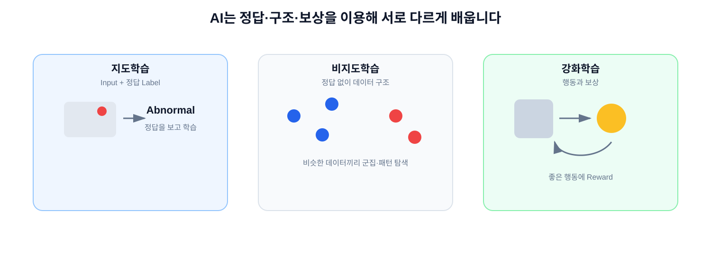
3-1
비지도학습 — 정답 없이 데이터의 구조를 찾는다
비슷한 샘플을 모으고, 일반적인 패턴에서 벗어난 데이터를 이상 후보로 찾을 수 있습니다.
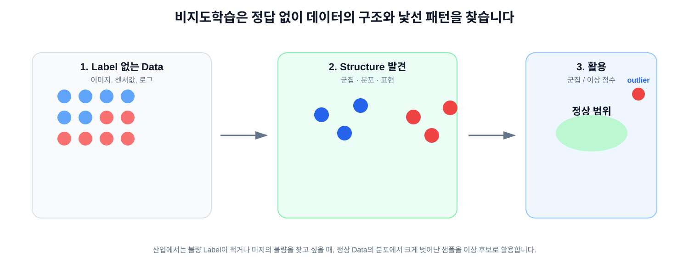
중요: 비지도학습은 Class 이름을 바로 맞히는 방식이 아닙니다. 결과의 의미를 현장 지식 또는 후속 검증으로 해석해야 합니다.
INDUSTRY
산업에서는 지도학습과 비지도학습을 어떻게 사용할까?
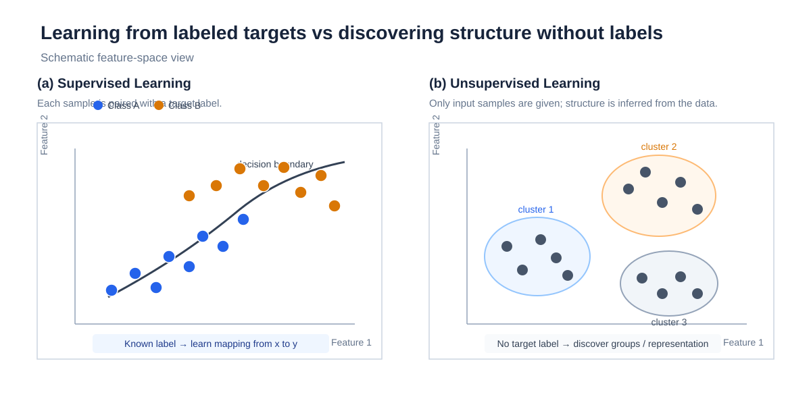
4
지도학습: 문제와 정답을 같이 본다
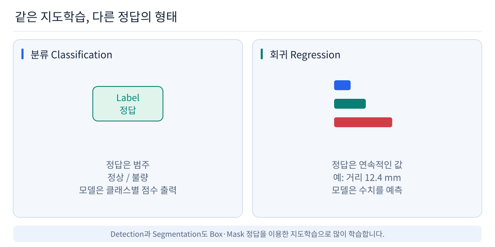
5
분류와 회귀
Classification은 범주를, Regression은 연속적인 숫자 값을 예측합니다.
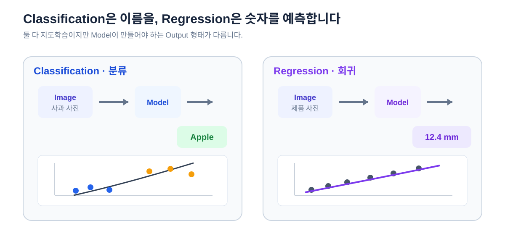
6
이진 분류와 다중 클래스 분류
Binary Classification두 선택지 중 하나를 고릅니다.
raw score
↓
Sigmoid
↓
Abnormal = 0.87
Multi-class Classification세 개 이상의 Class 중 하나를 고릅니다.
raw scores
↓
Softmax
↓
Normal 0.10
CaseA 0.75
CaseB 0.15
Sigmoid와 Softmax는 모델의 출력 점수를 해석하기 쉬운 값으로 바꾸는 데 자주 사용됩니다.
7
Model, Parameter, Hyperparameter
Input x
↓
Model f(x; θ)
↓
Prediction ŷ
Parameter학습 과정에서 모델이 스스로 바꾸는 값입니다. Weight와 Bias가 대표적입니다.
HyperparameterLearning Rate, Batch Size, Layer 수처럼 학습 전에 사람이 설정하는 값입니다.
Parameter → 모델이 학습
Hyperparameter → 사람이 설정/탐색
8
신경망의 기본 단위: Perceptron
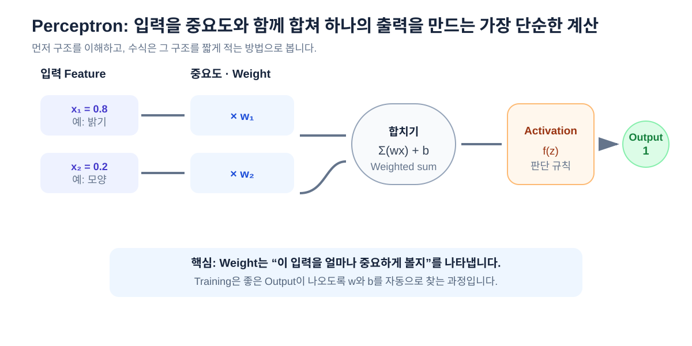
9
AND Gate — 직선 하나로 구분할 수 있는 문제
AND
0 AND 0 → 0
0 AND 1 → 0
1 AND 0 → 0
1 AND 1 → 1
Linearly Separable두 Class를 하나의 직선(고차원에서는 Hyperplane)으로 나눌 수 있다는 뜻입니다.
AND는 Output 1인 점이 (1,1) 하나뿐이라 직선 하나로 0과 1을 나눌 수 있습니다.
즉, 단순한 Linear Model 하나로도 표현 가능한 문제입니다.
10
XOR Gate — 직선 하나로는 구분할 수 없는 문제
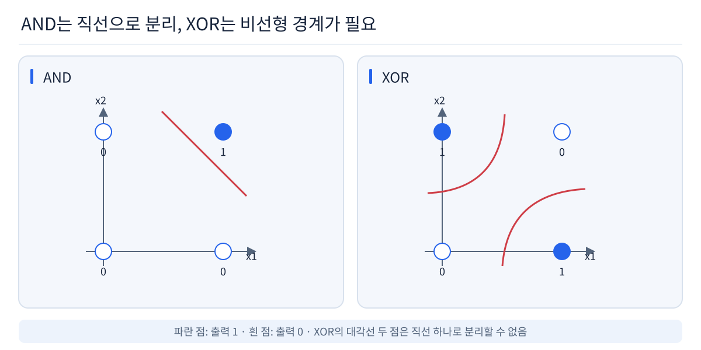
XOR: (0,1), (1,0)은 1이고 (0,0), (1,1)은 0입니다. 같은 Class가 대각선으로 떨어져 있기 때문에 직선 하나로는 분리할 수 없습니다.
11
그럼 Linear Layer를 여러 개 쌓으면 XOR를 풀 수 있을까?
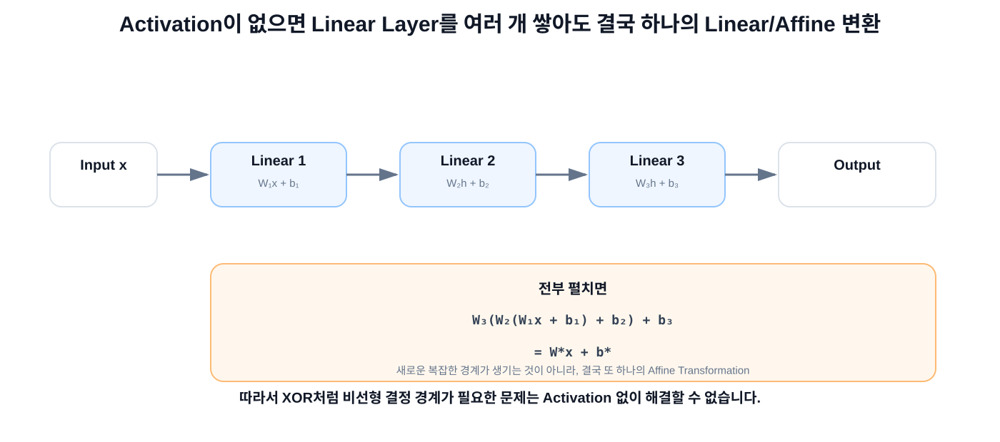
12
Activation이 없으면 깊어져도 표현력은 늘어나지 않습니다
h₁ = W₁x + b₁
h₂ = W₂h₁ + b₂
= W₂(W₁x + b₁) + b₂
= (W₂W₁)x + (W₂b₁ + b₂)
= W*x + b*
Layer를 2개, 10개, 100개 쌓아도 중간에 비선형 함수가 없다면 결국 하나의 Affine Layer와 같습니다.
그래서 XOR처럼 비선형 결정 경계가 필요한 문제는 Linear Layer만 쌓아서는 표현할 수 없습니다.
13
Activation Function이 비선형성을 추가합니다
Activation FunctionLinear / Convolution Layer 사이에 비선형 변환을 넣어 복잡한 함수를 표현할 수 있게 합니다.
ReLU(x) = max(0, x)
[-2, -0.5, 0, 1, 3]
↓
[ 0, 0, 0, 1, 3]
Linear
↓
ReLU
↓
Linear
↓
ReLU
↓
복잡한 Decision Boundary
비선형성이 들어가면서 단순한 직선 하나가 아니라 여러 영역을 조합한 복잡한 판단 경계를 만들 수 있습니다.
14
Feature와 Representation
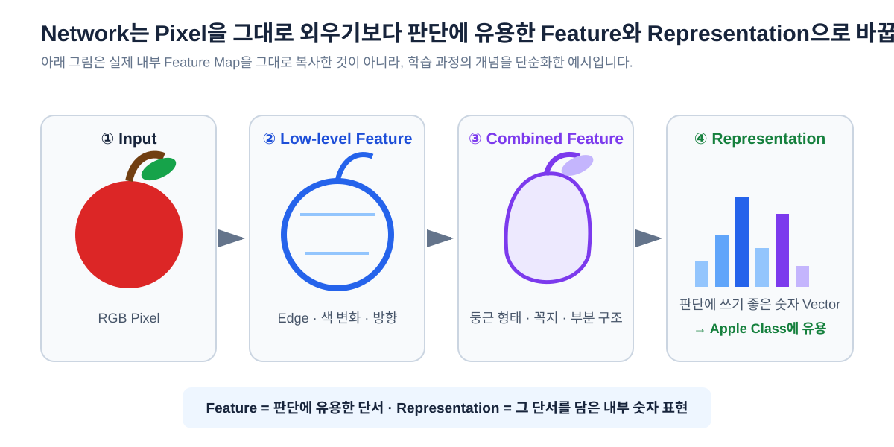
15
“학습”은 Weight를 반복 수정하는 과정
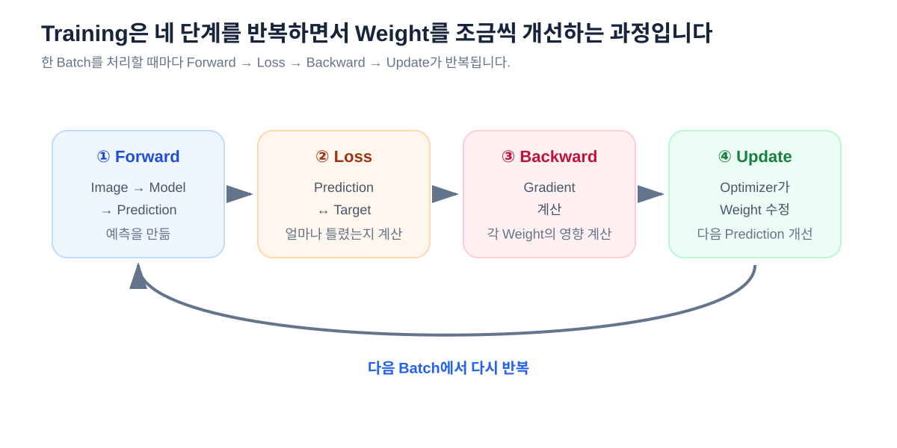
16
Loss, Gradient, Backpropagation, Optimizer
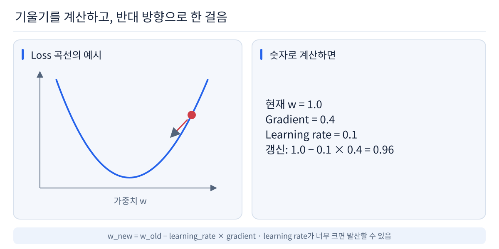
17
Batch, Iteration, Epoch
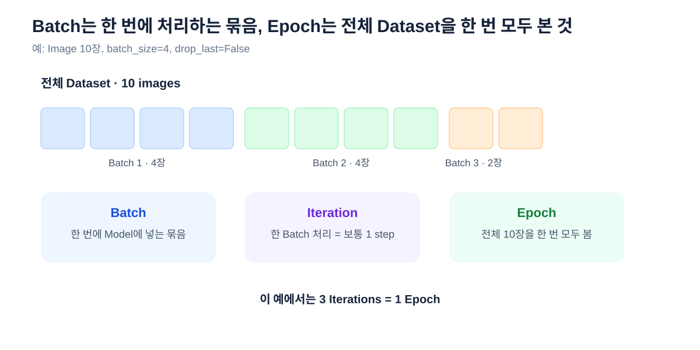
18
Dataset은 모델이 배우는 세상
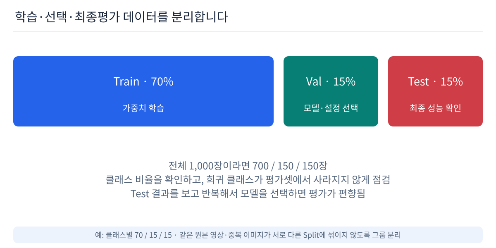
19
Train / Validation / Test의 역할은 다릅니다
TRAIN
문제집
정답을 보며 Weight를 실제로 학습합니다.
VALIDATION
모의고사
모델 선택, Hyperparameter 조정, Overfitting 확인에 사용합니다.
TEST
최종 시험
가능한 한 마지막까지 보지 않고 일반화 성능을 평가합니다.
Validation을 계속 보며 선택하면 Validation에도 맞춰집니다. 그래서 최종 Test는 별도로 유지하는 것이 중요합니다.
20
좋은 Train 성능 ≠ 좋은 AI
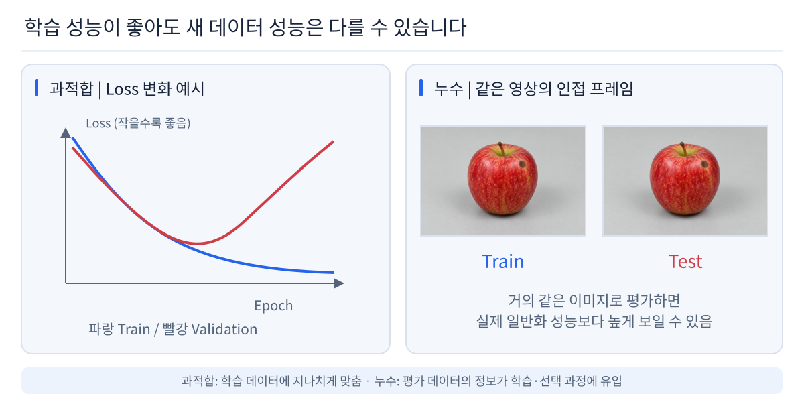
21
실제 AI 개발은 학습 한 번으로 끝나지 않습니다
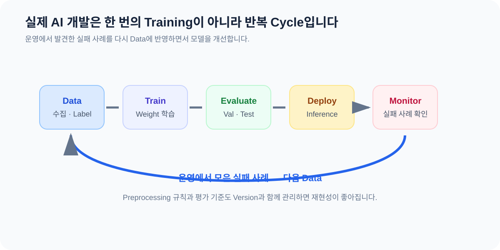
22
이미지 학습에서 Convolution과 Activation
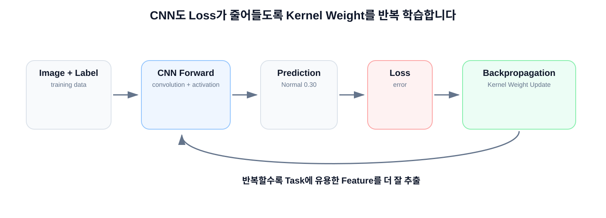